¿Quiénes somos?
Somos una empresa dedicada al alquiler de andamios y maquinaria para la construcción. Te ofrecemos una solución segura, confiable y adaptada a las necesidades de cada obra, priorizando siempre la calidad y los plazos para nuestros clientes.
Nuestro Catálogo
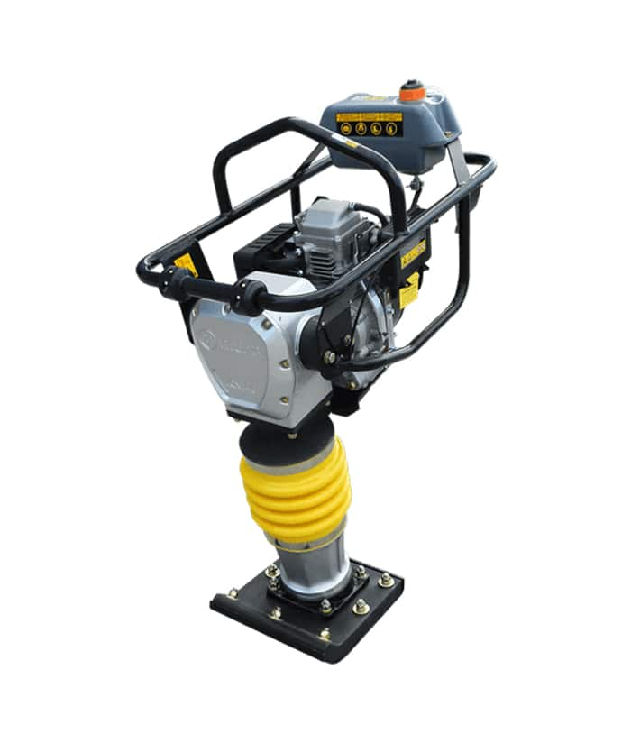
Apisonadora
Motopisón Niwa 160cc con motor Honda GX160, ideal para compactación en obra.
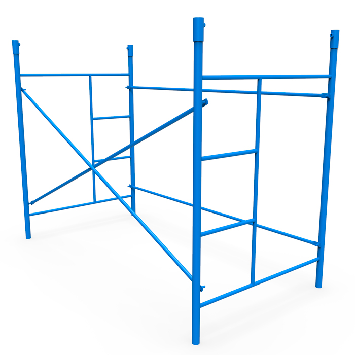
Andamios Tubulares
Estructuras modulares certificadas para trabajos en altura con máxima seguridad.
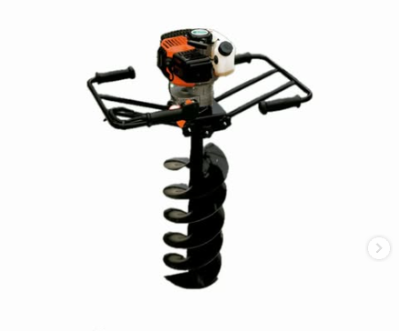
Hoyadora
Hoyadora a explosión de 63 cm³ con mechas de 20 y 30 cm de diámetro.
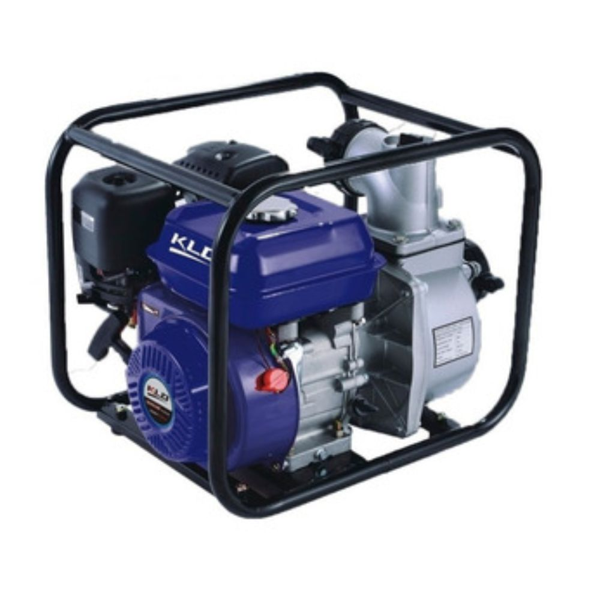
Motobomba
Motobomba naftera 4 tiempos con caudal de hasta 60.000 litros por hora.
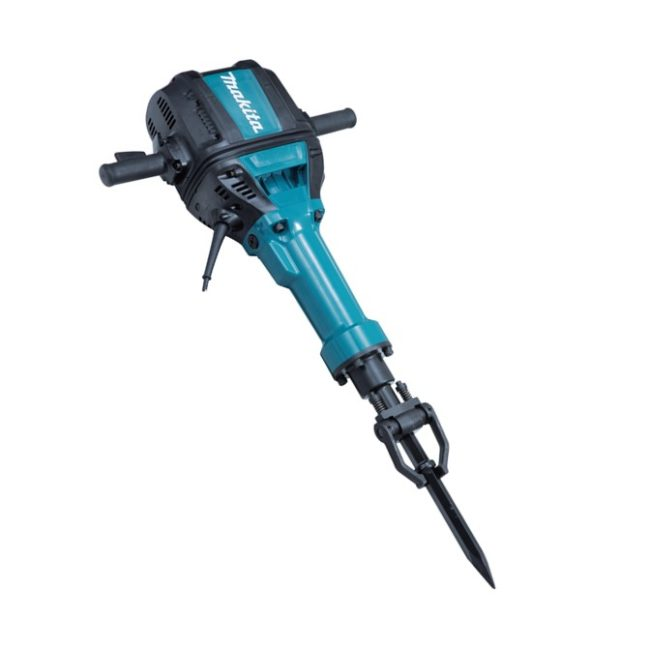
Martillo demoledor
Martillo Makita 72J y 30 kg con sistema Anti Vibración para demolición pesada.
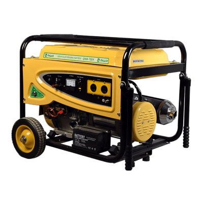
Grupo Electrógeno
Generador Niwa monofásico de 10 kVA con motor 7 HP y arranque eléctrico.
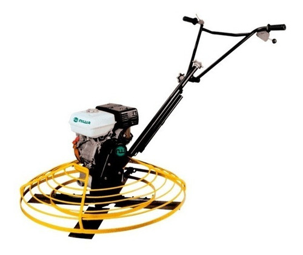
Allanadora
Allanadora a explosión de 90 cm para acabados de alta calidad en hormigón.
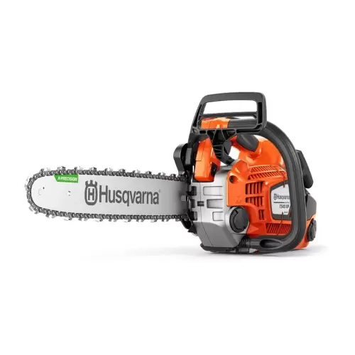
Motosierra
Motor de 35 cc y espada de 40 cm, ideal para podas y corte de troncos.
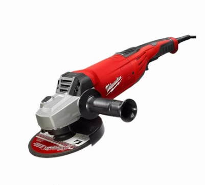
Amoladora Angular
Milwaukee de 9" para cortes intensivos en hierro, metal y mampostería.
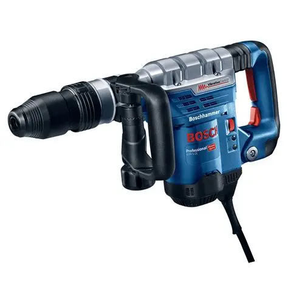
Martillo Demoledor
Martillo Bosch de 7 joules, liviano y maniobrable para obra general.
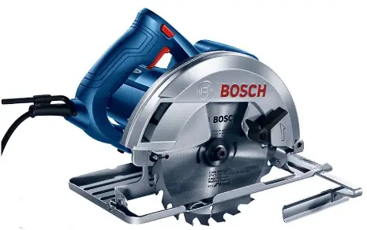
Sierra Circular
Herramienta profesional con disco de 184 mm (7 1/4"), ideal para cortes precisos en madera.
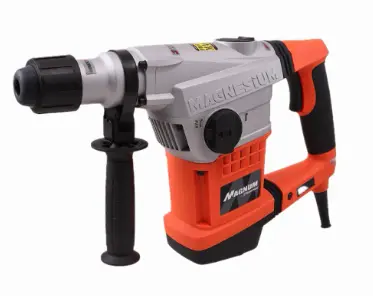
Rotomartillo
Rotomartillo profesional de 1250 W con energía de impacto de 10 Joules y carcasa de aleación de magnesio.
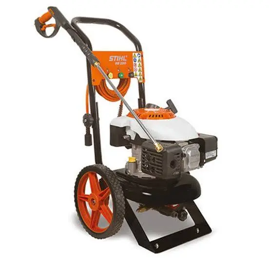
Hidrolavadora
Hidrolavadora a explosión STIHL RB 200, un equipo de alta presión diseñado para tareas de limpieza exigentes en exteriores donde no se dispone de conexión eléctrica.
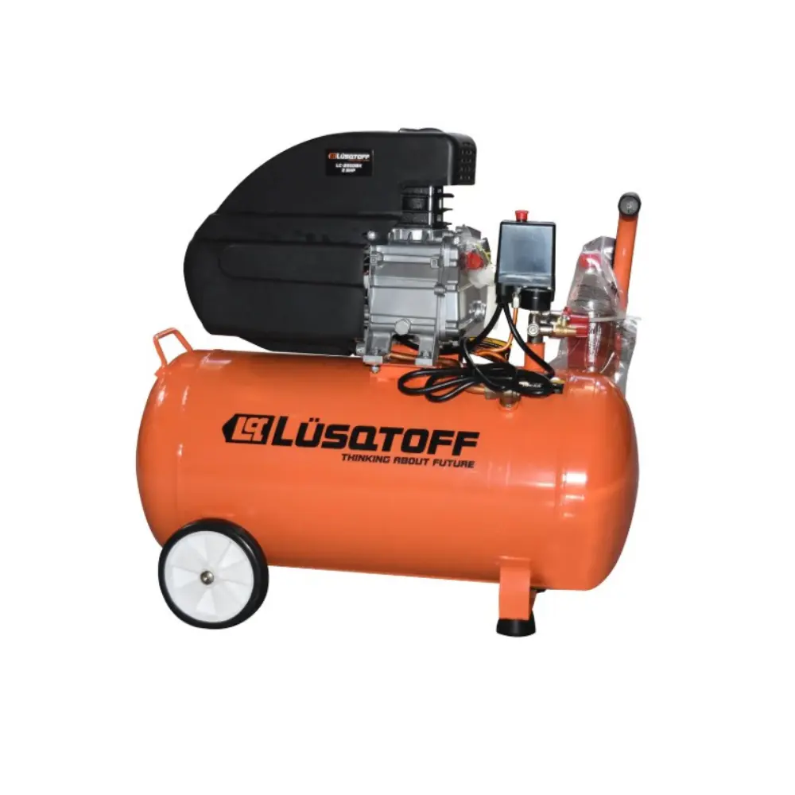
Compresor de Aire
Compresor de aire monofásico Lüsqtoff de 50 litros y 2.5 HP, indispensable para alimentar herramientas neumáticas con un flujo de aire constante..
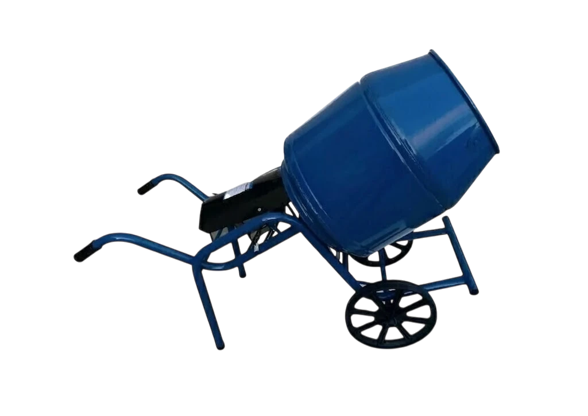
Mezcladora
Capacidad para 130 litros y motor de 1HP, ideal para mezclar hormigón en obras de construcción.
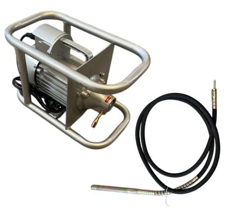
Vibrador de Hormigón
Capacidad para 130 litros y motor de 1HP, ideal para mezclar hormigón en obras de construcción.
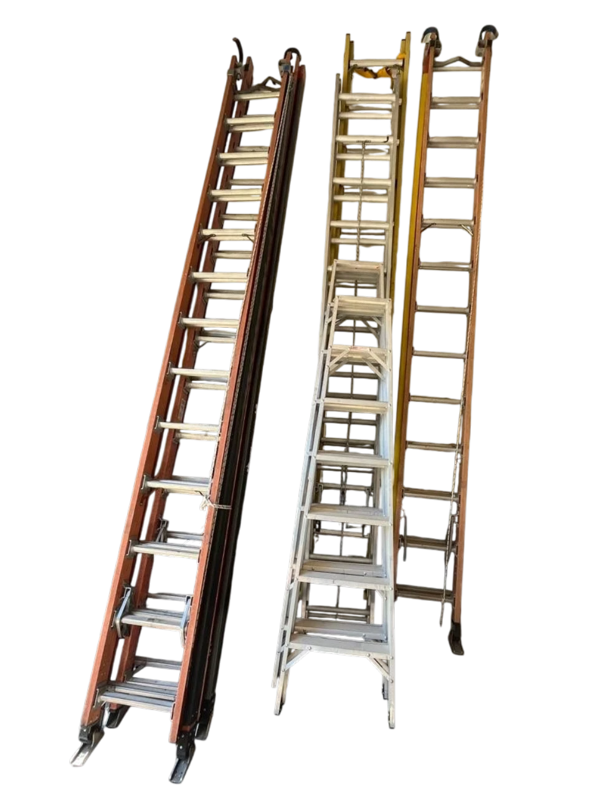
Escaleras
Escaleras de calidad para obras, consultar tamaños.